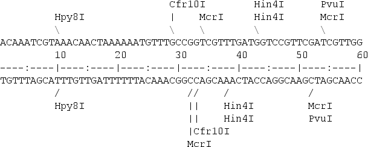
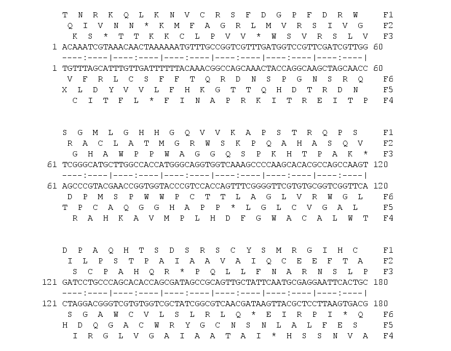
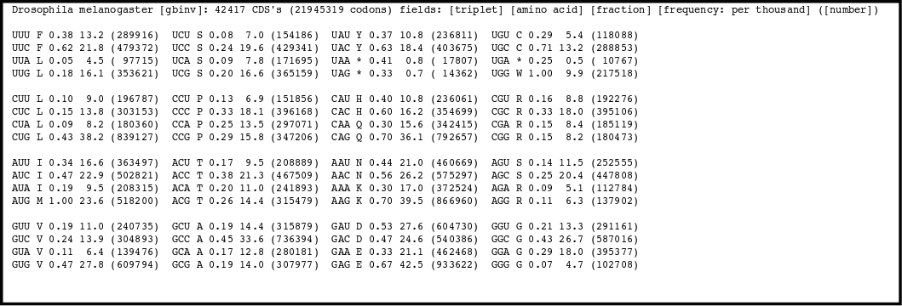
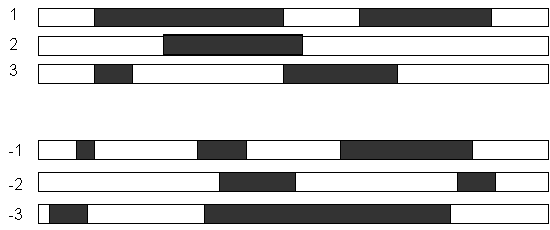
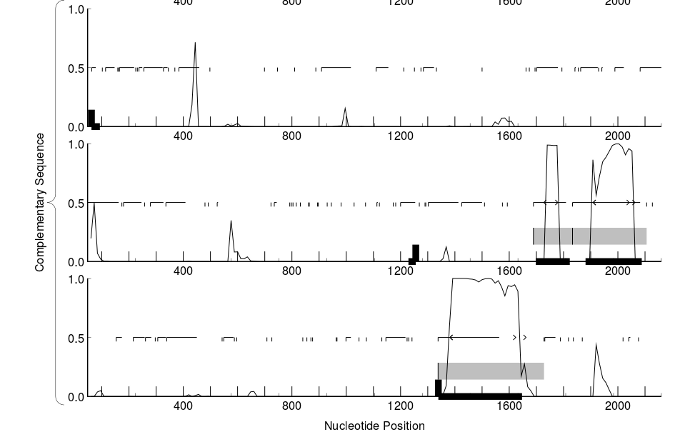
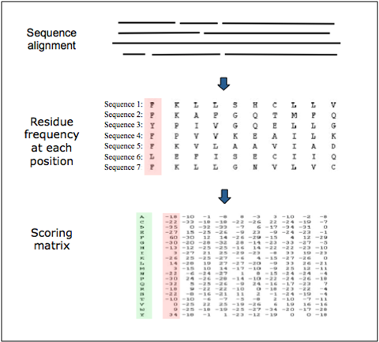
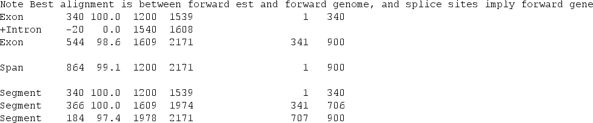

Structural Annotation¶
A DNA sequence, for instance a genome sequence, has much more value if we can annotate were are the different features like promoters, exons, introns, CDSs, transposons, etc. The annotation of those regions in a sequence is the structural annotation. This structural annotation is usually acompanied by a further functional annotation that will try to show the functions for these different regions. These annotations are very helpful for the users of the genomic sequence. Let’s suppose that we link a disease to a region of a genome. If we have a poor annotation or we just have no annotation at all we won’t know which genes are located close to that region or even if we have any gene at all. Having a good quality annotation allow us to make sense of the region under study.
We can base the structural annotation on experimental data, like ESTs, or we can do bioinformatic analyses in the sequence itself. These later annotations that start with just the sequence to be annotated are usually refered to as ab initio annotations.
There are different bioinformatic analyses that we can use to predict the gene structure (promoter, exons and introns), the alternative splicing, the coded protein, etc.
We have to take into account that we can have different degrees of confidence in these annotations. They can be supported by different amounts of experimental evidence and the methods used to create them can have different degrees of sensitivity and specificity.
Restriction maps¶
A restriction map is a kind of physical map that shows the location of the restriction sites within a DNA sequence.
To create a restriction map we need a database with the restriction enzyme sites. One popular option is to use Rebase. Then a software programe can be used to look for the restriction sites in the nucleotide sequence. remap from EMBOSS is one of the options.
A restriction map can be used to map the sequences against a bigger physical map. Nowadays is quite common to use the maps created by the Bionano company for that porpose.
Translating a DNA sequence¶
Predicting which peptide can be encoded by a DNA sequence is quite straightforward. We need the DNA sequence, the genetic code and the location of the start codon.
A DNA sequence is transcribed to RNA and translated to a peptide by using the genetic code.
DNA AGG TTT ACA TGT AGA GGA TGA
RNA AGG UUU ACA UGU AGA GGA UGA
PROT Arg Phe Thr Cys Arg Ala Fin
Although the RNA uses Uracil instead of Thymine it is very uncommon to have sequence files that correspond to RNA sequences with Us. The standard is to use in the sequence files T for both DNA and RNA.
To translate a nucleotide sequence we need to decide which genetic code to use. All known life uses a very similar genetic code. The genetic code is said to be universal, but it is in fact almost universal, there are slight changes in the code. For instance, the human mithocondria uses a slight variation of the genetic code.
A nucleotide sequence has six possible translations, three in the forward direction and six in the reverse and complementary strand.
Forward
DNA: AGGTTTACATGTAGAGGA
1fr: ArgPheThrCysArgGly
2fr: GlyLeuHisValGlu
3fr: ValTyrMetAm*Arg
Reverse and complementary
DNA: TCCTCTACATGTAAACCT
1fr: SerSerThrCysLysPro
2fr: ProLeuHisValAsn
3fr: LeuTyrMetOc*Thr
EMBOSS has two programs to get the six possible translations transeq and sixpack.
Backtranslation¶
We can also backtranslate a peptide sequence to a nucleotide sequence. In this case, due the degeneracy of the genetic code we will get many nucleotide uncertanities.
> peptide
ACDEFGHIKLMNPQRSTVWY*
>reverse translation
gcntgygaygarttyggncayathaarytnatgaayccncarmgnwsnacngtntggtaytrr
You can backtranslate a peptide sequence in EMBOSS with backtranseq. There is also the possibility of infering the most probable codons for the backtranslation by using a codon usage table. EMBOSS can do it with the program backtranambig
Codon usage tables¶
There is a codon usage bias, not all synonymous codons are used in the same frequency. Different organisms have different biases. They tend to prefer one codon over others to code for a particular aminoacid.
By counting how many times an aminoacid is used in the proteins coded by an organism nucleotide sequences a Codon Usage Table can be compiled for every species.
There is a codon usage database available on line.
ORFs¶
An Open Reading Frame (ORF) is the strecth of a reading frame that do not contain a stop codon. An AUG codon in a ORF might indicate the translation start.
There is software in EMBOSS to show the ORFs (plotorf) and to get their translations (showorf).
CDS prediction¶
Long ORFs might indicate the presence of a coding sequence and of a corresponding gene. In the procaryotes it is easier to detect long ORFs because they are not broken by the introns. In the eucaryotes the ORFs will be fragmented in multiple regions and they will be harder to detect. To be able to detect the CDSs in th eeucaryotes we need also to infer the gene structure, the location of exons and introns and the splicing variants.
A nucleotide sequence can have several open reading frames. There are several confusing factors:
the start codon might be outside the sequence.
There might be sequencing errors that create artifactual stop codong or that shift the frame
There are different hints that can point to the ORF that corresponds to the real CDS.
The codon use table for the species can be used to detect the real CDS. The real CDS will tend to use the codond prefered by the species, while the other ORFs will use codons at random. From these fact the coding likelihood of all six frames of a nucleotide sequence can be calculated.
Even if we don’t have the codon use table for the species we can still use the codon bias to help with the detection of the CDSs. The codon bias will create a bias in the nucleotide frequencies of the third base. We can plot the GC content of the third base of the codons along a window for all six possible frames and detect biases there.

Another hint that can be used to detect CDSs is the protein conservation. Most proteins have similar proteins from other organisms in the database. BLAST can translate the six frames and can do a search aginst the known proteins. A similarity in a fragment of a frame with a known protein is an indication that that fragment is part of a real CDS.
Sequencing erros might produce frame shifts. Also, in the eucaryotes, the CDS will be split by the introns and can be divided in different jump. There are software that integrates the codon usage bias, the presence of start and stop codons and the sequences required by the splice sites to calculate a probability of any region of a nucleotide sequence being a coding region. One example of such software is GeneMark.
Promoter prediction¶
It would be very valuable to locate the promoter union sites for the standard proteins of the transcription process and the union sites for the transcription factors. Locating a promoter region in a genomic sequence is not a straightforward task. Transcription factor targets have several characteristics that difficult their location, they are:
small
not very conserved
Small sequences can be found just by chance locating such a sequence is not a guarantee that we have found a real transcription factor union site. Also their variability might let us think that there are many union sites, but most of them won’t be real. Just by looking at those small sequences will create a lot of false positives.
Another factor that has been demonstrated to influence the gene expression is the histone location. A DNA region heavily coiled around the histones will have less chances to get accessed by the proteins involved in the transcription. Histone location can be influence by the DNA composition, by the methilation or by other factors that do not depend of the DNA sequences, so it is difficult to predict it.
Typical promoter sequences¶
There are sequences that are typically found in most promoters. Their composition depend on the species.
In bacteria there is a Pribnow box. Its consensus sequence is TATAAT and it is located at -10 upstream of the transcription starting site. A similar sequence to this one will be found in most promoters, but the sequence might be slighty different in some of them.
The Pribnow box has a similar function to the TATA box found in eucaryotes and archea, it is recognized by the RNA polimerase during the initiation of the transcription.
There is also a TTGACA usually found at -35 in bacteria and other less conserved regions.
In eucaryotes and archea the TATA box is located usually between -20 or -35 relative to the transcription starting site. The TATA box has a core conserved core of TATAAA which is usually followed by three or more adenines.
There are also in eucaryotes other sequences found that are not as conserved, like the CCAAT box and the GC box. The GC box is usually located 110 bases upstream of the transcription starting site and its consensus sequence is GGGCGG.
The CCAAT box is usually located 60 to 100 bases upstream of the transcription starting site and its consensus sequence is GGCCAATCT.
Transcription factor sites¶
There are many DNA motifs recognized by the transcript factors. Each transcription factor recognizes some particular sequences different from the other ones. These sequences are usually small and the transcription factor, in most cases, can lock to them even if they chage a little, so they can ve more or less conserved between different promoters.
Every gene is controlled by different transcription factors and the location of the sequences recognized by the factors can be quite variable and can be far appart from the transcrition initiation site.
Describing the sites¶
The sites which are binded by the transcription factors are variable, but we have to describe them. We can use different ways to describe those sites.
We can use a consensus sequence. A consensus sequence shows the most abundant nucleotide for each position and ignores the rest of the variation. For instance, TATAAT is the consensus sequence for the Pribnow box, but that does not mean that all the Pribnow boxes have these sequence.
Sequence patterns. We can show all possible nucleotides for each position. Like TATAAW or TATAA(A/T). These patterns will match with all Pribnow boxes. The problem with them is that they do not include information about the sequence. Maybe one of the alternative nucleotides is found many more times the others. It could be well the case that TATAAA is more common than TATAAT, but that information is lost in the sequence pattern.
Position-specific scoring matrix. They include the frequency of all the residues for every position.
Detecting transcription factor sites¶
There are different computational methods to predict the biding sites for the transcription factors, but none of them can do highly accurate predictions. The best of them are capable of recognizing at most 60% of the promoters, and they product many false positives. There are several programs to do the transcription site an promoter detection like: tfscan, jaspscan or GrailEXP.

We can also align the promoter regions from very close species. The sites binded by the transcription factors will tend to be more consereved than the rest of the promoter because they have more functional relevance.
Gene structure prediction¶
The gene structure prediction is the process of predicting the location of the genes in a genomic sequence as well as its elements like promoters, exons, introns and coding regions.
These genes can be protein coding or RNA coding.
CDSs and ORFs¶
In procaryotes the problem of looking for protein coding genes is easier because the CDSs won’t be fragmented in pieces by the introns and the appearance of long ORFs will be a strong indication of their presence. In eucaryotes the problem is harder to solve because the introns split the CDSs and the ORFs won’t be as informative. Also, the size of the non-coding regions can be quite large, specially the introns.
In locating genes that do not code for proteins we won’t be able to use any ORF hints.
Alignment with ESTs or cDNAs¶
We can use the information provided by the ESTs or cDNA to locate regions expressed in the genome. These regions will tend to be genes. We can also use this information to build the structure of the different mRNAs that a gene can produce.
We can use the programs est2genome and esim4 from EMBOSS to do these alignments.
To be able to use these method of detecting genes we need to have transcriptomic sequence data. Even with these data at hand we should consider different limitations:
We can have low expressed genes that are not represented in our transcriptomic data
We could have some mRNAs not completely covered
We have to infer the mRNA structure from the fragmented ESTs and that is not a trivial task
We can have ESTs that correspond to spurious expression like non-mature mRNAs or transposable expression in the introns or intergenic regions.
Comparison with proteins from other species¶
We can compare our genome to a protein database by using BLAST.
If we detect a match in a genome to a protein sequence from other species we have a hint that that genomic sequence might be part of a gene. Of course these method has also some limitations:
There might be no proteins similar to some of the genes in our species.
We can have pseudogenes that could match with some protein despite not being real genes.
Combining different evidences¶
There are different programs that try to predict the gene structure by taking into account the different evidences. They take into account:
The codon usage
Splicing sites
ORFs
The GC content. Gene regions tend to have a higher GC content.
EST and cDNA alignment
Comparisons with sequence database
Different programs will create different predictions even when the same evidence is considered. So the prediction will depend on the program and the evidence used. Of course, the more evidence and the higher quality that evidence is the easier will be to infer the real gene structure.
Some of the software use is Augustus, GenaMark and Genescan.

{kind=link}
{kind=link}
{kind=link}
{kind=link}
{kind=link}
{kind=link}
{kind=link}